Tutorial on how to make a nice baby & daddy photo into a nice baby & daddy painting.
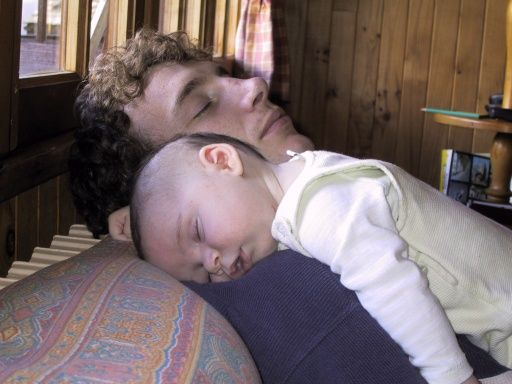
Nice picture, baby & dad.
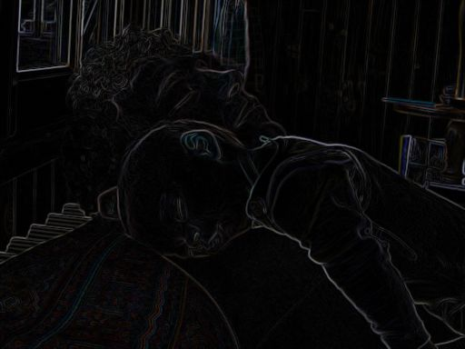
Straightforward Sobel edge detect of original (don't forget to save a copy of the original)
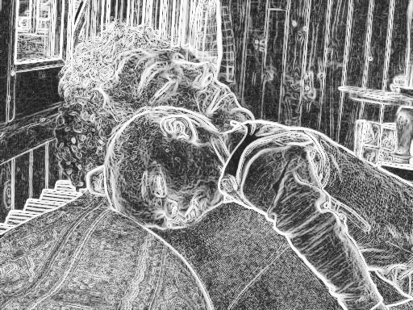
Bring out detail of the sobel edge detect, and convert it to greys using desaturate.
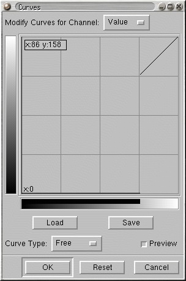
We only want the strong edges, otherwise it'll look crap. To get them, we eliminate the edges with small magnitude. The easiest way to do this is with the levels tool. We set the curve type to free (which allows discontinuities) and then for the bottom 3/4 of the curve (or thereabouts) to 0. Just drag the mouse/pen along the bottom of the curves tool.
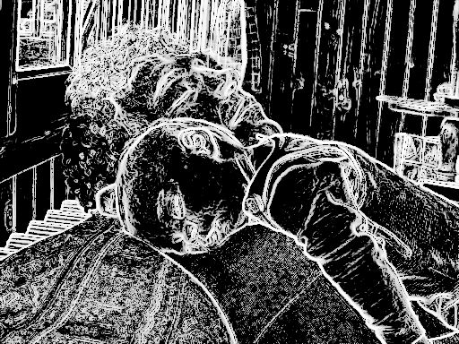
The result is much cleaner. The only problem is it's white-on-black, when we want black-on-transparent ideally.
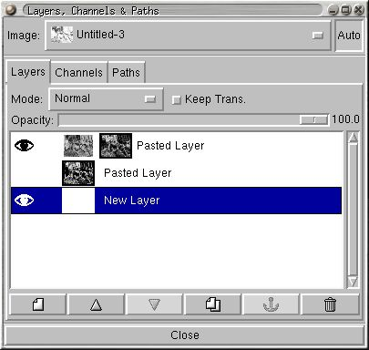
Small trick to get to black-on-transparent. Invert the Sobel edge detect (you did keep a copy, right?) and apply our highpass-filtered copy as a mask. Since we kept the strong edges, this means that we end up with a rather nice black-on-transparent layer.
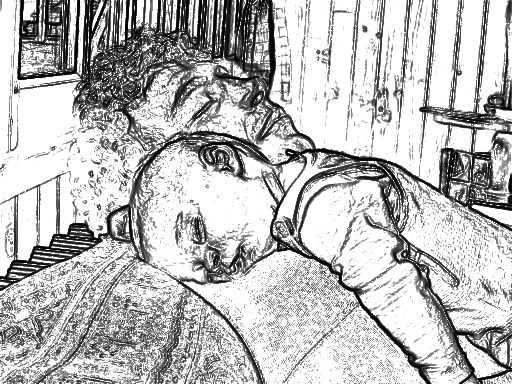
This is the result of the trick above. It's shown here with a white layer behind it. We could stop here, and this is a decent sketch effect. For the colouring, we need some more work (mostly slogging, though).
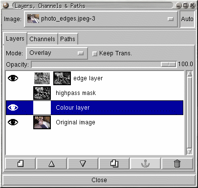
images,original image & colouring layer in overlay mode
We put our original image back in the background, and set the white layer to overlay (as we see here) - this means we can see the coloured areas behind the white layer - this is extremely helpful when we're painting the white layer, as sometimes the edges are rather fine, or are in the middle of an area that's more or less the same colour.
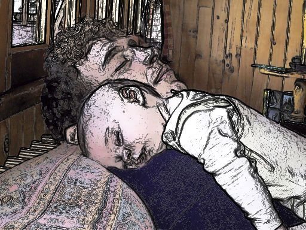
Using the colour-picker tool, we select the colour we want to paint from the original image (just activate the "original image" layer and try to pick a colour representative of an area), and then we re-activate our colouring layer, which is still in overlay mode. Using a big brush (with the brush tool for more natural edges) we fill in the area of that colour roughly (doesn't have to be perfect). You should see the colour darkening as we draw with a colour similar to the background colour.
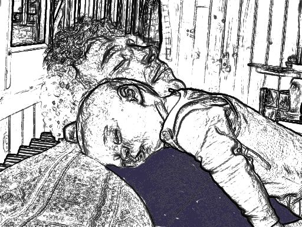
This is what we see if we set the drawing layer to normal mode. And we're on our way.
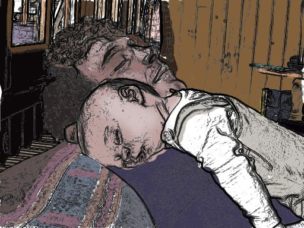
After some effort, all the regions get filled in. Final touches to make faces and the like look better for shadows and highlights were accomplished by selecting a representative shadow/highlight colour, and adding the extra bits with the airbrush tool. After all our work, we end up with this very nice looking painting effect.